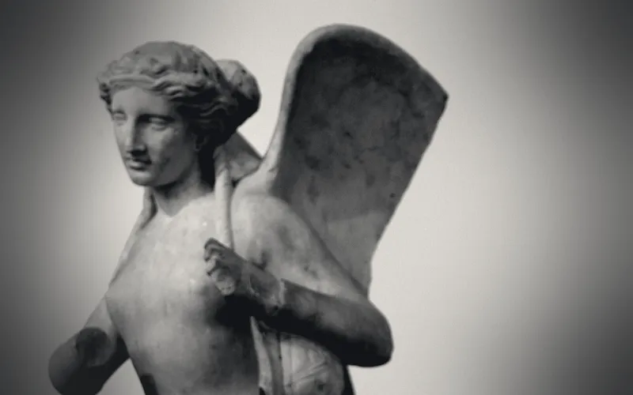

O aviso de Circe
A feiticeira Circe contou a Odisseu que quem ouvisse as sereias nunca mais voltaria para a mulher e os filhos. Em volta delas, só havia ossos.
Homero, Odisseia XII
CRIATURAΣειρήν
Na arte grega, as sereias não eram mulheres-peixe: tinham corpo de pássaro e rosto de mulher. Cantavam numa ilha, e os marinheiros que as ouviam esqueciam de voltar para casa.
Que nota você dá? Clique nos cerberinhos:

Orfeu passou por elas tocando mais alto: música contra música. Comigo ele fez parecido, só que me pôs para dormir.
A feiticeira Circe contou a Odisseu que quem ouvisse as sereias nunca mais voltaria para a mulher e os filhos. Em volta delas, só havia ossos.
Homero, Odisseia XIIOdisseu tapou com cera os ouvidos dos remadores e pediu para ser amarrado ao mastro. Ouviu o canto, implorou para ser solto, mas o navio passou.
Conhecer Odisseu →Quando os Argonautas passaram pela ilha, Orfeu tocou a lira tão alto que ninguém ouviu as sereias. Só um remador pulou no mar.
Conhecer Orfeu →“Elas encantam todos os homens que chegam até elas.”
Homero, Odisseia XII (tradução livre)

Ὀδυσσεύς
Rei de Ítaca. Levou dez anos para voltar para casa depois da guerra.

Ὀρφεύς
Músico que desceu ao Submundo para buscar Eurídice. Até eu parei para ouvir.

Ἰθάκη
Ilha de Odisseu e Penélope. Se é a mesma Ítaca de hoje, ainda se discute.